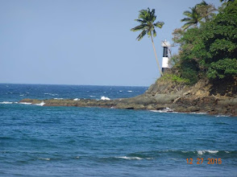
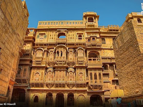

Destination You can visit
Varanasi,Uttar Pradesh


Travel Audio Guide
Listen to our travel guide:
Travel Experience Video
Explore Travel on YouTube
Map To SearchThe Destination
Top 5 Places to visit
- The Taj Mahal in Agra
- The royal palaces of Jaipur
- The serene backwaters of Kerala
- The spiritual hub of Varanasi
- The mountain landscapes of Ladakh
| Place | Best Time | Days Required |
|---|---|---|
| Taj Mahal (Agra) | October to March | 1–2 days (Perfect for a quick weekend trip or stopover) |
| Kerala Backwaters | September to March | 3–4 days (Ideal for a houseboat stay and exploring nearby towns) |
| Ladakh (Jammu & Kashmir) | May to September | 5–7 days (Crucial for acclimatization, high passes, and remote lakes) |